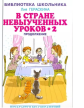

"В стране невыученных уроков" вот уже сорок лет - самая читаемая в школе книга-сказка о лентяе и двоечнике Вите Перестукине. Ее автор, Лия Гераскина, написала продолжение сказки "В стране невыученных уроков - 2", в котором уже Витя помогает своим друзьям. Исправившись сам, Витя берет с собой в удивительную страну друзей. Они попадают то во времена динозавров, то в античный мир, знакомятся с Одиссеем, с циклопом Полифемом... Для среднего школьного возраста. Художник В. Чижиков.